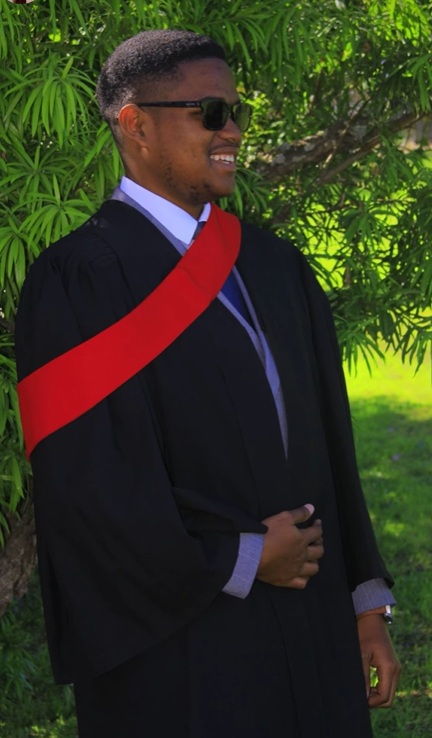

Bavuyise Azania Gcakamane | WDD 130

Hey. My name is Bavuyise Azania Gcakamane, from a little town in Eastern Cape, South Africa called Whittlesea. I was born and raised there. I was baptized in 2013 December and have been an active member since then. I serve as an Elders Quorum First Counsellor and in the Stake YSA Committee. I love listening to music and watching a lot of tv shows and anime. I have a Diploma in Electrical Engineering and currently studying Bachelor of Applied Sciences in Software Development. I currently work at my municipality as Technical Assistant for Engineering Department at the Water Services Unit. My main job is to make sure that the citizens in my municipality are receiving water whether it be from Water Treatment Plant or Borehole. I like sports especially Cricket, Soccer, Rugby, F1 and Basketball. I like to take long drives when I need to clear my head. My favorite scripture is Helaman 5:12 and 2 Nephi 28:30. My favorite Hymn is 1003: It is well with my soul.